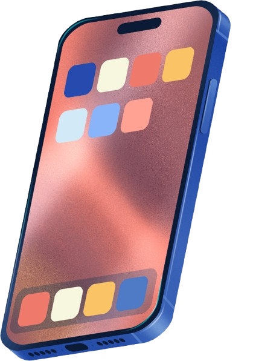

Internet Cepat Buat Apa?
Ya... walaupun di beberapa tempat belum cepat-cepat banget sih
Namun, data BPS 2024 ternyata punya jawaban yang bikin miris...
Akses yang Meluas
Sebelum menjawab pertanyaan itu, kita harus mengakui satu hal: dari tahun ke tahun, akses digital kita memang semakin meluas.
Indonesia telah melompat ke dalam permainan baru dengan aturan yang belum sepenuhnya dipahami. Dengan jumlah pengguna yang terus meroket tajam ini, sebuah pertanyaan penting muncul: Bagaimana sebenarnya cara masyarakat Indonesia mengakses dunia maya?
Mobile First Nation
Persentase penduduk yang menggunakan media tertentu untuk mengakses internet (2024)

The Smartphone as Lifeline
Sembilan dari sepuluh pengguna internet Indonesia tidak pernah mengenal desktop. Mereka melompat langsung—dari nol koneksi ke genggaman penuh dunia. Transformasi ini fundamental.
Laptop & Tablet
Perangkat sekunder yang umumnya digunakan untuk produktivitas atau bekerja. Persentasenya (10,12%) jauh di bawah dominasi perangkat mobile.
Komputer Desktop
Hanya 2,62% pengguna yang masih mengandalkan komputer meja konvensional untuk mengakses internet.
Lainnya
Sebagian kecil (0,32%) memanfaatkan media lain seperti Smart TV atau konsol permainan genggam.
Ternyata, ketimpangan pilihan perangkat ini sangat memengaruhi kebiasaan masyarakat kita dalam berinternet. Layar kecil di tangan lebih sering digunakan untuk apa?
Scrolling vs Producing
Tujuan utama penggunaan internet berdasarkan aktivitas (2024).
The Consumption Trap
Di sini, cerita berubah. Pengguna internet Indonesia tidak membangun. Mereka mengonsumsi. Hiburan mendominasi 85% waktu layar. Media sosial memakan 77%. Ini adalah jebakan konsumsi massal.
Utilitas & Fungsional
Pengguna secara aktif mencari berita, bertransaksi finansial, hingga berbelanja. Hal ini wajar dan sangat positif sebagai fungsi dasar internet harian.
Produktivitas Tertinggal
Pembelajaran online dan bisnis digital jauh tertinggal. Ini bukan kegagalan individu. Ini adalah konsekuensi dari akses yang terbentuk sebelum infrastruktur fungsional tersedia untuk produktivitas sejati.
Gaya hidup konsumtif ini seolah-olah sudah menjadi fenomena yang merata di seluruh pelosok negeri. Namun, mari kita lihat lebih dekat, sejauh mana sebenarnya 'kemewahan' ini menjangkau masyarakat kita?
Kepulauan Riau Bersinar
Sisi barat dan kawasan kepulauan berdenyut dengan kecepatan jaringan. Kepulauan Riau menikmati akses internet yang hampir universal, tumbuh secara pesat di atas rata-rata nasional.
Papua Tertinggal
Tapi pedalaman Papua tinggal dalam gelap. Bukan sekadar perbedaan—ini adalah dua negara yang berbeda. Satu tumbuh, satu tertinggal. Satu membangun, satu menunggu.
Peta Penetrasi Internet Provinsi
Di atas kertas, peta penetrasi internet kita tampak sangat menjanjikan. Sebagian besar provinsi menunjukkan warna yang optimis, memberikan ilusi bahwa kita semua sudah sepenuhnya hidup di era digital yang setara.
Ilusi Statistik
Tapi tunggu dulu. Dalam statistik, angka rata-rata provinsi sering kali menutupi realita pahit yang terjadi di tingkat akar rumput.
Peta Desa Tanpa Sinyal
Inilah wajah asli infrastruktur kita. Di balik gemerlap angka penetrasi, masih ada wilayah-wilayah di mana warganya tak bisa mengirim pesan singkat, apalagi menikmati hiburan digital. Sinyal masih menjadi barang gaib di ribuan desa.
Isolasi Geografis
Sebagian besar berada di pegunungan Papua dan pedalaman luar pulau Jawa. Mereka terisolasi dari peradaban digital, terkunci oleh kerasnya kontur bumi.
Pusat Terkoneksi
Kontras yang tajam terlihat di Pulau Jawa dan pusat ekonomi lainnya, di mana blankspot nyaris tidak ditemukan. Dua realita dalam satu peta.
Namun, ironinya belum berhenti di sini. Untuk sekadar memenuhi gaya hidup digital yang didominasi hiburan tersebut, harga yang harus dibayar nyatanya sangat jomplang antar daerah.
Ketimpangan Pengeluaran
Selamat datang di realita Jakarta-Sentris. Warga ibu kota rela merogoh kocek hingga Rp365 ribu per bulan, melesat sendirian meninggalkan provinsi lain seperti Jawa Tengah yang tertatih di angka Rp172 ribu.
Fakta mengenai ketimpangan ongkos, perangkat, dan tujuan penggunaan ini pada akhirnya membawa kita pada sebuah perenungan panjang tentang arah digitalisasi bangsa.
The Unfinished Future
Lebih dari 270 juta orang kini terhubung. Ini adalah pencapaian yang luar biasa. Tapi, konektivitas bukanlah akhir dari cerita. Ini justru awal dari pertanyaan yang lebih mendasar.
Apa yang kita lakukan dengan konektivitas ini? Apakah kita sedang membangun? Atau hanya mengonsumsi? Apakah jaringan ini menjangkau semua orang secara adil, atau hanya mengistimewakan mereka yang berpusat di kota besar?
Sekarang pertanyaannya: Terhubung untuk apa? Dan untuk siapa?